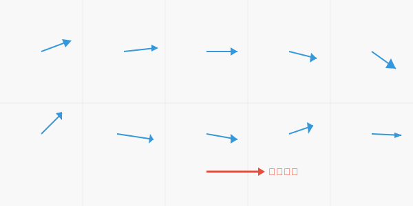

## フォン=ミーゼス分布が解き明かす図形の特徴 ### 〜データサイエンスの幾何学への応用〜 --- ### 自己紹介 <div class="profile-container"> <div class="profile-left"> * さめ(meg-ssk) * 🧑💻 フリーランスのソフトウェアエンジニア * 得意分野: * 📸 コンピュータビジョン (画像認識/点群処理) * 🌍 空間情報処理 (地理情報/リモートセンシング) * ☁️ クラウドインフラ設計/IaC (AWS, GCP) * [GitHub](https://github.com/s-sasaki-earthsea-wizard) * [YouTube](https://www.youtube.com/@SyotaSasaki-EW) * [Speaker Deck](https://speakerdeck.com/syotasasaki593876) </div> <div class="profile-right"> <img src="assets/images/avatar.png" alt="avatar" height="350px" width="350px"> </div> </div> --- ### ハイライト <div class="simple-box"> * フォン=ミーゼス分布は「方向の分布」を表す分布関数である * 重要な応用例を数多く持つ * 大きさだけではなく方向を持つ量(ベクトル)の分析 * 風向や図形の法線分布など * **今日は基礎的なコンセプトとオープンデータを使った分析例を示します！** </div> --- ### 簡単な例  <div class="highlight-box"> * 平均すれば右を向いているが、ひとつひとつのサンプルの向きは揺らぐ * 方向の分布を表す分布関数とそれを特徴付けるパラメータは？ </div> --- ### フォン=ミーゼス分布 $$ f(\theta) = \frac{\exp(\kappa \cos(\theta - \mu))}{2\pi I_0(\kappa)} $$ <div class="highlight-box"> * 言うなれば2次元のベクトルの向きの正規分布 * $\mu$: 平均 * $\kappa$: 集中度 * $I_0(.)$: 第1種ベッセル関数 </div> --- ### フォン=ミーゼス分布の可視化 <img src="assets/images/von-Mises-polar-histogram.png" height="400px"> <div class="highlight-box"> * $\mu=180^\circ$, $\kappa =1.5$ の例を極座標ヒストグラムで表現 </div> --- ### 実用例: 風向の分布解析 <div class="simple-box"> * 日本海側は冬に北西から季節風が吹く * [気象庁が公開している青森県鯵ヶ沢町の風向分布のデータ](https://www.data.jma.go.jp/stats/etrn/index.php)を利用して検証 </div> --- ### 2024年6月と12月の風向分布 <!--TODO: Create wind direction polar histogram--> <div class="highlight-box"> * 北西方向から風が吹く頻度が12月の方が高い * 本来ならより詳細な検討が必要だが割愛 </div> --- ### 図形の法線方向の分布 <div class="simple-box"> * 円と正方形の法線の分布を比較 </div> <!--TODO: Create diagrams--> --- ### 円と正方形の法線分布の比較 <!--TODO: Create the polar histogram of a circle and a square normals--> <div class="highlight-box"> * 円の法線分布は一様 * 正方形の法線は4つのピークを持つ * **法線分布から図形の情報を抽出できる！** </div> --- ### 円と楕円の法線分布の比較 <div class="simple-box"> * 離心率 $e=0, 0.25, 0.5$のケースで計算 </div> <!--TODO: Cretae diagrms of ellipses--> --- --- ### 3次元への拡張: フォン=ミーゼス-フィッシャー分布 <div class="simple-box"> * フォン=ミーゼス分布は2次元平面での議論 * **フォン=ミーゼス-フィッシャー分布**は一般の$d$次元に拡張可能 * ただし今日は3次元のみにフォーカス </div> $$ f_3(\mathbf{x}) = \frac{\kappa}{2\pi \sinh \kappa} \exp (\kappa \langle \bm{\mu}, \mathbf{x} \rangle) $$ 平均$\bm{\mu}$がベクトルになることに注意 --- ### 実用例: 点群データの法線分布の比較 <div class="simple-box"> * </div> --- ### 点群データの法線分布の分析結果 --- ### まとめ <div class="simple-box"> * </div>